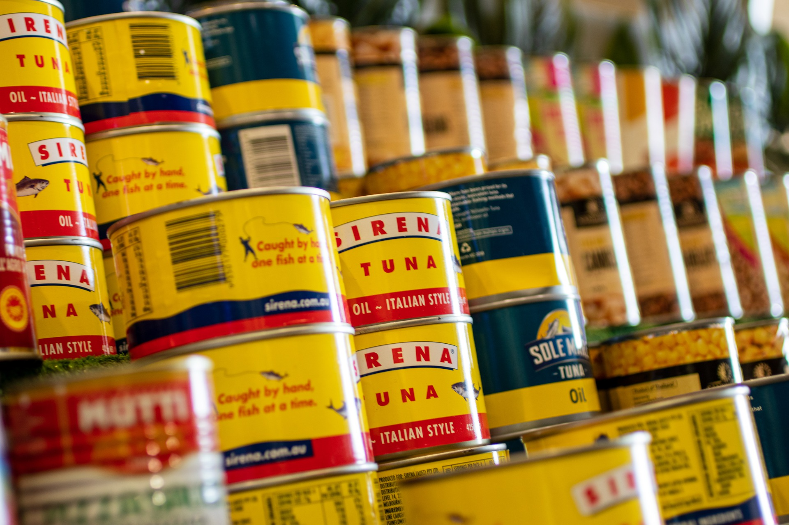

Tuna Salad

DESCRIPTION
lorm ipsum
lorm ipsum
Ingredients
- Albacore Tuna (4 cans)
- White Onion (281 g)
- Celery (186 g)
- Red Onion (90 g)
- Sweet Relish (add to taste)
- Mayonnaise (add to desired consistency)
Steps
- Crumble Tuna in a large bowl.
- Add diced onion and celery
- Blend mixture
- Add mayonnaise. The amount is personal. Add and stir until you're satisfied.
- Add sweet relish. Follow the same instructions for mayonnaise.